Unifying the Representation of Spin and Angular Momentum
I will show how to represent both integral and half-integral spin within the same quaternion algebraic field. This involves using quaternion automorphisms. First a sketch of why this might work will be provided. Second, small rotations in a plane around two axes will be used to show how the resulting vector points in an opposite way, depending on which involution is used to construct the infinitesimal rotation. Finally, a general identity will be used to look at what happens under exchange of two quaternions in a commutator.
Automorphism, Rotations, and Commutators
Quaternions are formed from the direct product of a scalar and a 3-vector. Rotational operators that act on each of the 3 components of the 3-vector act like integral angular momentum. I will show that a rotation operator that acts differently on two of the three components of the 3-vector acts like half-integral spin. What happens with the scalar is irrelevant to this dimensional counting. The same rotation matrix acting on the same quaternion behaves differently depending directly on what involutions are involved.
Quaternions have 4 degrees of freedom. If we want to represent quaternions with automorphisms, 4 are required: They are the identity automorphism, the conjugate anti-automorphism, the first conjugate anti-automorphism, and the second conjugate anti-automorphism:
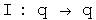
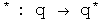
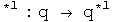
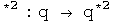
where
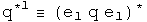
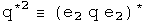
e1, e2, e3 are orthogonal basis vectors
The most important automorphism is the identity. Life is stable around small permutations of the identity:-) The conjugate flips the signs of the each component in the 3-vector. These two automorphisms, the identity and the conjugate, treat the 3-vector as a unit. The first and second conjugate flip the signs of all terms but the first and second terms, respectively. Therefore these operators act on only the two of the three components in the 3-vector. By acting on only two of three components, a commutator will behave differently. This small difference in behavior inside a commutator is what creates the ability to represent integral and half-integral spins.
Small Rotations
Small rotations about the origin will now be calculated. These will then be expressed in terms of the four automorphisms discussed above.
I will be following the approach used in J. J. Sakurai's book "Modern Quantum Mechanics", chapter 3, making modifications necessary to accommodate quaternions. First, consider rotations about the origin in the z axis. Define:
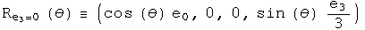
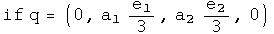
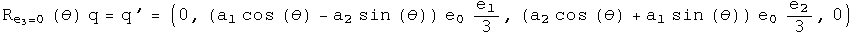
Two technical points. First, Sakurai considered rotations around any point along the z axis. This analysis is confined to the z axis at the origin, a significant but not unreasonable constraint. Second, these rotations are written with generalized coordinates instead of the very familiar and comfortable x, y, z. This extra effort will be useful when considering how rotations are effected by curved spacetime. This machinery is also necessary to do quaternion analysis (please see that section, it's great :-)
There are similar rotations around the first and second axes at the origin;
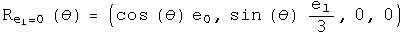
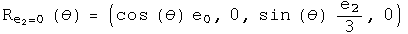
Consider an infinitesimal rotation for these three rotation operators. To second order in theta,
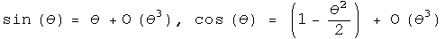
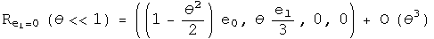
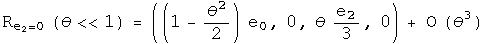
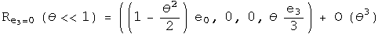
Calculate the commutator of the first two infinitesimal rotation operators to second order in theta:
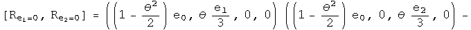
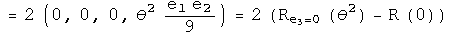
To second order, the commutator of infinitesimal rotations of rotations about the first two axes equals twice one rotation about the third axis given the squared angle minus a zero rotation about an arbitrary axis (a fancy way to say the identity). Now I want to write this result using anti-automorphic involutions for the small rotation operators.
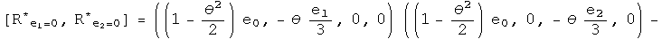
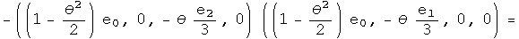
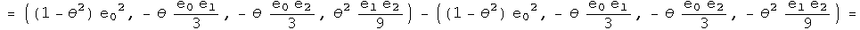
Nothing has changed. Repeat this exercise one last time for the first conjugate:
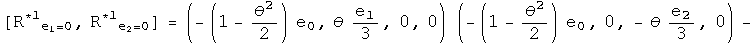
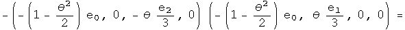

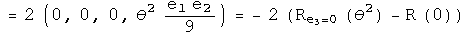
This points exactly the opposite way,even for an infinitesimal angle!
This is the kernel required to form a unified representation of integral and half integral spin. Imagine adding up a series of these small rotations, say 2 pi of these. No doubt the identity and conjugates will bring you back exactly where you started. The first and second conjugates in the commutator will point in the opposite direction. To get back on course will require another 2 pi, because the minus of a minus will generate a plus.
Automorphic Commutator Identities
This is a very specific example. Is there a general identity behind this work? Here it is:
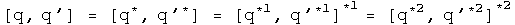
It is usually a good sign if a proposal gets more subtle by generalization :-) In this case, the negative sign seen on the z axis for the first conjugate commutator is due to the action of an additional first conjugate. For the first conjugate, the first term will have the correct sign after a 2 pi journey, but the scalar, third and forth terms will point the opposite way. A similar, but not identical story applies for the second conjugate.
With the identity, we can see exactly what happens if q changes places with q' with a commutator. Notice, I stopped right at the commutator (not including any additional conjugator). In that case:
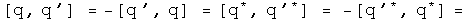
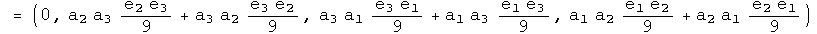
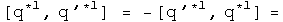
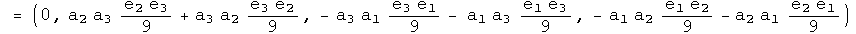
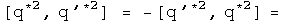
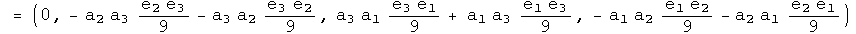
Under an exchange, the identity and conjugate commutators form a distinct group from the commutators formed with the first and second conjugates. The behavior in a commutator under exchange of the identity automorphism and the anti-automorphic conjugate are identical. The first and second conjugates are similar, but not identical.
There are also corresponding identities for the anti-commutator:
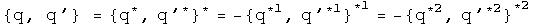
At this point, I don't know how to use them, but again, the identity and first conjugates appear to behave differently that the first and second conjugates.
Implications
This is not a super-symmetric proposal. For that work, there is a super- partner particle for every currently detected particle. At this time, not one of those particles has been detected, a serious omission.
Three different operators had to be blended together to perform this feat: commutators, conjugates and rotations. These involve issue of even/oddness, mirrors, and rotations. In a commutator under exchange of two quaternions, the identity and the conjugate behave in a united way, while the first and second conjugates form a similar, but not identical set. Because this is a general quaternion identity of automorphisms, this should be very widely applicable.